Orange County, CA COVID Situation Report
Last updated: 2020-11-18
Checks: 5 2
Knit directory: uci_covid_modeling/
This reproducible R Markdown analysis was created with workflowr (version 1.6.2). The Checks tab describes the reproducibility checks that were applied when the results were created. The Past versions tab lists the development history.
The R Markdown file has unstaged changes. To know which version of the R Markdown file created these results, you’ll want to first commit it to the Git repo. If you’re still working on the analysis, you can ignore this warning. When you’re finished, you can run wflow_publish to commit the R Markdown file and build the HTML.
Great job! The global environment was empty. Objects defined in the global environment can affect the analysis in your R Markdown file in unknown ways. For reproduciblity it’s best to always run the code in an empty environment.
The command set.seed(20200727) was run prior to running the code in the R Markdown file. Setting a seed ensures that any results that rely on randomness, e.g. subsampling or permutations, are reproducible.
Great job! Recording the operating system, R version, and package versions is critical for reproducibility.
- executive-summary
- latent-vs-observed-incidence
- model-inputs
- ppc-forecasts
- R0-IFR
- R0-over-time
- reading-sensitivity-objects
- unnamed-chunk-1
- unnamed-chunk-2
- unnamed-chunk-3
- unnamed-chunk-4
- unnamed-chunk-5
- unnamed-chunk-6
- unnamed-chunk-7
- unnamed-chunk-8
To ensure reproducibility of the results, delete the cache directory index_cache and re-run the analysis. To have workflowr automatically delete the cache directory prior to building the file, set delete_cache = TRUE when running wflow_build() or wflow_publish().
Great job! Using relative paths to the files within your workflowr project makes it easier to run your code on other machines.
Great! You are using Git for version control. Tracking code development and connecting the code version to the results is critical for reproducibility.
The results in this page were generated with repository version 0d6e95f. See the Past versions tab to see a history of the changes made to the R Markdown and HTML files.
Note that you need to be careful to ensure that all relevant files for the analysis have been committed to Git prior to generating the results (you can use wflow_publish or wflow_git_commit). workflowr only checks the R Markdown file, but you know if there are other scripts or data files that it depends on. Below is the status of the Git repository when the results were generated:
Ignored files:
Ignored: .Rhistory
Ignored: .Rproj.user/
Ignored: analysis/aug12_sept16_cache/
Ignored: analysis/aug17_sep21_cache/
Ignored: analysis/aug28_oct02_cache/
Ignored: analysis/aug2_sept6_cache/
Ignored: analysis/aug7_sept11_cache/
Ignored: analysis/index_cache/
Ignored: analysis/jul18_aug22_cache/
Ignored: analysis/jul24_aug28_cache/
Ignored: analysis/jul28_sept1_cache/
Ignored: analysis/sept02_oct09_cache/
Ignored: analysis/sept11_oct16_cache/
Ignored: analysis/sept18_oct23_cache/
Ignored: analysis/sept25_oct30_cache/
Untracked files:
Untracked: code/SEIeIpRD/oc/2020-10-02_2020-11-06/
Unstaged changes:
Modified: analysis/index.Rmd
Modified: code/file_list.R
Modified: data/data_for_calcat.csv
Note that any generated files, e.g. HTML, png, CSS, etc., are not included in this status report because it is ok for generated content to have uncommitted changes.
These are the previous versions of the repository in which changes were made to the R Markdown (analysis/index.Rmd) and HTML (docs/index.html) files. If you’ve configured a remote Git repository (see ?wflow_git_remote), click on the hyperlinks in the table below to view the files as they were in that past version.
| File | Version | Author | Date | Message |
|---|---|---|---|---|
| Rmd | 0d6e95f | Damon Bayer | 2020-11-17 | 11-16 Prep |
| Rmd | 69f46c1 | igoldsteinh | 2020-11-10 | november 09 update |
| html | 69f46c1 | igoldsteinh | 2020-11-10 | november 09 update |
| Rmd | 05959a1 | igoldsteinh | 2020-11-02 | november 2nd update |
| html | 05959a1 | igoldsteinh | 2020-11-02 | november 2nd update |
| Rmd | 25fef4a | Damon Bayer | 2020-10-28 | Rework calcat forecasts |
| Rmd | 93559b8 | igoldsteinh | 2020-10-26 | October 26th Update |
| html | 93559b8 | igoldsteinh | 2020-10-26 | October 26th Update |
| html | bdb793f | igoldsteinh | 2020-10-21 | really fixed the archived post problem |
| html | 14f388c | igoldsteinh | 2020-10-21 | Fixing displaying archived posts |
| Rmd | 31e4c9c | igoldsteinh | 2020-10-19 | October 19 model update |
| html | 31e4c9c | igoldsteinh | 2020-10-19 | October 19 model update |
| Rmd | 0692cd9 | Damon Bayer | 2020-10-19 | Switch to observed deaths for calcat |
| Rmd | 68079e5 | igoldsteinh | 2020-10-13 | october 13 model update |
| html | 68079e5 | igoldsteinh | 2020-10-13 | october 13 model update |
| Rmd | f1b08ce | vnminin | 2020-10-08 | played with the header a bit |
| html | f1b08ce | vnminin | 2020-10-08 | played with the header a bit |
| Rmd | b4d2a83 | Damon Bayer | 2020-10-06 | Fix date labels |
| html | b4d2a83 | Damon Bayer | 2020-10-06 | Fix date labels |
| Rmd | e3f4c18 | igoldsteinh | 2020-10-05 | model update |
| html | e3f4c18 | igoldsteinh | 2020-10-05 | model update |
| Rmd | 89814c5 | Damon Bayer | 2020-09-29 | Minor plot formatting tweak in .Rmd only |
| Rmd | 4d65a26 | Damon Bayer | 2020-09-29 | Revert “Minor plot formatting tweak” |
| html | 4d65a26 | Damon Bayer | 2020-09-29 | Revert “Minor plot formatting tweak” |
| Rmd | 64f3007 | Damon Bayer | 2020-09-29 | Minor plot formatting tweak |
| html | 64f3007 | Damon Bayer | 2020-09-29 | Minor plot formatting tweak |
| Rmd | 758ba66 | igoldsteinh | 2020-09-28 | aug12 - sept 16 update |
| html | 758ba66 | igoldsteinh | 2020-09-28 | aug12 - sept 16 update |
| Rmd | 63b198d | Damon Bayer | 2020-09-21 | New forecasting time horizon and keep old forecasts |
| Rmd | bb66666 | igoldsteinh | 2020-09-21 | august07 - sept 11 update |
| html | bb66666 | igoldsteinh | 2020-09-21 | august07 - sept 11 update |
| Rmd | 74b96fb | vnminin | 2020-09-19 | added link to OC COVID Trends website and added logos to about page |
| html | 74b96fb | vnminin | 2020-09-19 | added link to OC COVID Trends website and added logos to about page |
| Rmd | 1c970e2 | Damon Bayer | 2020-09-18 | export Re for calcat |
| Rmd | c49f157 | Damon Bayer | 2020-09-17 | export data for calcat |
| Rmd | 667521a | igoldsteinh | 2020-09-17 | full update aug2-sept6 |
| html | 667521a | igoldsteinh | 2020-09-17 | full update aug2-sept6 |
| Rmd | 8c1f7ca | igoldsteinh | 2020-09-17 | Merge branch ‘master’ of https://github.com/vnminin/uci_covid_modeling |
| Rmd | babbc10 | igoldsteinh | 2020-09-17 | first aug2-sept6 update |
| html | d7bda0b | vnminin | 2020-09-14 | rebuilt everything just in case |
| Rmd | d03e4e3 | vnminin | 2020-09-14 | resovled conflicts |
| Rmd | 2380220 | vnminin | 2020-09-14 | added title to the historical R0 plot |
| html | 2380220 | vnminin | 2020-09-14 | added title to the historical R0 plot |
| Rmd | b9129e6 | igoldsteinh | 2020-09-14 | fixed some typos |
| html | b9129e6 | igoldsteinh | 2020-09-14 | fixed some typos |
| Rmd | 4c36b15 | Damon Bayer | 2020-09-14 | History of R0 estimation |
| html | 4c36b15 | Damon Bayer | 2020-09-14 | History of R0 estimation |
| Rmd | dbab6de | vnminin | 2020-09-13 | fixed some R0 subscripts, but many are left |
| html | dbab6de | vnminin | 2020-09-13 | fixed some R0 subscripts, but many are left |
| Rmd | 246fc9c | vnminin | 2020-09-13 | fixed cachign issue with prevalence plot and rounded off prevalence a bit |
| html | 246fc9c | vnminin | 2020-09-13 | fixed cachign issue with prevalence plot and rounded off prevalence a bit |
| Rmd | e819db9 | Damon Bayer | 2020-09-13 | Adde prevalence numbers to summary |
| html | e819db9 | Damon Bayer | 2020-09-13 | Adde prevalence numbers to summary |
| Rmd | 3554527 | Damon Bayer | 2020-09-13 | Positivity Fraction -> Positivity Percent |
| Rmd | cd4e651 | igoldsteinh | 2020-09-13 | actually updating jul 28 sept 1 |
| html | cd4e651 | igoldsteinh | 2020-09-13 | actually updating jul 28 sept 1 |
| Rmd | b5a0ae4 | igoldsteinh | 2020-09-13 | Merge branch ‘master’ of https://github.com/vnminin/uci_covid_modeling |
| Rmd | 2ae9065 | igoldsteinh | 2020-09-13 | jul28 to sep 1 update |
| html | 2ae9065 | igoldsteinh | 2020-09-13 | jul28 to sep 1 update |
| html | 2b665a5 | vnminin | 2020-09-12 | tried to add google analytics unsuccessfully yet |
| Rmd | 0f11928 | Damon Bayer | 2020-09-09 | Positivity Fraction as % |
| html | 0f11928 | Damon Bayer | 2020-09-09 | Positivity Fraction as % |
| html | 5cbf476 | vnminin | 2020-09-08 | got rid of caching warnings in the most recent archived report |
| html | ab9898a | Damon Bayer | 2020-09-08 | jul 24-aug 28 update 2 |
| Rmd | e4e122f | igoldsteinh | 2020-09-08 | jul 24 - aug 28 update |
| html | e4e122f | igoldsteinh | 2020-09-08 | jul 24 - aug 28 update |
| Rmd | 8b62aff | Damon Bayer | 2020-09-08 | Fix x-axis spacing in appendix plots |
| html | 8b62aff | Damon Bayer | 2020-09-08 | Fix x-axis spacing in appendix plots |
| Rmd | 7922317 | igoldsteinh | 2020-09-08 | forgot some arxiv links |
| html | 7922317 | igoldsteinh | 2020-09-08 | forgot some arxiv links |
| Rmd | 82a701b | vnminin | 2020-09-04 | added caching to index rmd |
| html | 82a701b | vnminin | 2020-09-04 | added caching to index rmd |
| Rmd | 349da66 | vnminin | 2020-09-04 | merge conflict |
| html | 349da66 | vnminin | 2020-09-04 | merge conflict |
| Rmd | 22fb043 | vnminin | 2020-09-04 | some edits |
| html | 22fb043 | vnminin | 2020-09-04 | some edits |
| Rmd | 416b006 | Damon Bayer | 2020-09-03 | Automatic date labeling and fixed y-axis for cumulative plots |
| html | 416b006 | Damon Bayer | 2020-09-03 | Automatic date labeling and fixed y-axis for cumulative plots |
| Rmd | e7bdeeb | igoldsteinh | 2020-09-02 | new report Jul 18 - Aug 22 |
| html | e7bdeeb | igoldsteinh | 2020-09-02 | new report Jul 18 - Aug 22 |
| html | 5586873 | vnminin | 2020-09-01 | and now with rebuilding |
| Rmd | b56de81 | vnminin | 2020-09-01 | fixing typos |
| Rmd | dbb4f14 | vnminin | 2020-09-01 | added one more horizontal bar |
| html | dbb4f14 | vnminin | 2020-09-01 | added one more horizontal bar |
| Rmd | 5a2ae54 | vnminin | 2020-09-01 | small edits |
| html | 5a2ae54 | vnminin | 2020-09-01 | small edits |
| Rmd | d3179ba | vnminin | 2020-08-31 | forgot to rebuild |
| html | d3179ba | vnminin | 2020-08-31 | forgot to rebuild |
| Rmd | 660bde6 | vnminin | 2020-08-31 | resolved conflict |
| html | 660bde6 | vnminin | 2020-08-31 | resolved conflict |
| Rmd | f67a6e2 | vnminin | 2020-08-31 | reformatted report to be ore digestable, hopefully |
| html | f67a6e2 | vnminin | 2020-08-31 | reformatted report to be ore digestable, hopefully |
| Rmd | e5e49c0 | igoldsteinh | 2020-08-31 | fixed a typo that was buggin me |
| html | e5e49c0 | igoldsteinh | 2020-08-31 | fixed a typo that was buggin me |
| Rmd | dbf4f20 | vnminin | 2020-08-31 | playing with text |
| html | dbf4f20 | vnminin | 2020-08-31 | playing with text |
| Rmd | 5fd3a50 | igoldsteinh | 2020-08-31 | fixed issue 1, updated report with new pop size calculation |
| html | 5fd3a50 | igoldsteinh | 2020-08-31 | fixed issue 1, updated report with new pop size calculation |
| Rmd | 800b9bc | igoldsteinh | 2020-08-31 | Update index.Rmd |
| Rmd | 0f6ec4a | vnminin | 2020-08-30 | completing merge |
| Rmd | 3857e0a | vnminin | 2020-08-30 | started to rearrange figures in situation report |
| html | 3857e0a | vnminin | 2020-08-30 | started to rearrange figures in situation report |
| Rmd | c762f18 | igoldsteinh | 2020-08-28 | added software to about, made vladimir the contact |
| Rmd | 2eb7b73 | vnminin | 2020-08-27 | added some text with effexctive reproductive number |
| html | 2eb7b73 | vnminin | 2020-08-27 | added some text with effexctive reproductive number |
| Rmd | 7c5be6a | Damon Bayer | 2020-08-27 | Add R_eff to executive summary |
| Rmd | 33f234e | vnminin | 2020-08-27 | some formatting |
| html | 33f234e | vnminin | 2020-08-27 | some formatting |
| html | 6698589 | igoldsteinh | 2020-08-27 | change jun 20 - jul25 so that it looks like current report |
| Rmd | 4ca76fb | igoldsteinh | 2020-08-27 | Updating website, also adding latest report Jul 11 - Aug 15 |
| html | 4ca76fb | igoldsteinh | 2020-08-27 | Updating website, also adding latest report Jul 11 - Aug 15 |
| Rmd | a07b913 | igoldsteinh | 2020-08-26 | fixed model graphic, fixed legend sizes, fixed readme, added about |
| html | a07b913 | igoldsteinh | 2020-08-26 | fixed model graphic, fixed legend sizes, fixed readme, added about |
| html | 8d52b42 | igoldsteinh | 2020-08-26 | more updates to website |
| Rmd | 79a6fd6 | igoldsteinh | 2020-08-26 | updating about and license, experimenting with figure size |
| Rmd | ddbef62 | igoldsteinh | 2020-08-26 | changing website layout |
| html | ddbef62 | igoldsteinh | 2020-08-26 | changing website layout |
| Rmd | 64adfeb | igoldsteinh | 2020-08-20 | cleaning up helper functions and index |
| Rmd | 8abe830 | igoldsteinh | 2020-08-06 | fixed figure length, updated, tried a readme |
| html | 8abe830 | igoldsteinh | 2020-08-06 | fixed figure length, updated, tried a readme |
| Rmd | 99d68f7 | igoldsteinh | 2020-07-29 | bare bones report |
| html | 99d68f7 | igoldsteinh | 2020-07-29 | bare bones report |
| Rmd | 792b89a | vnminin | 2020-07-27 | Start workflowr project. |
Orange County, CA COVID-19 Situation Report, November 18, 2020
Report period: Oct 02 - Nov 06 (we don’t use the most recent data due to reporting delays)
The goal of this report is to inform interested parties about dynamics of SARS-CoV-2 spread in Orange County, CA and to predict epidemic trajectories. Methodological details are provided below and in the accompanying manuscript. We are also contributing to COVID Trends by UC Irvine project that provides data visualizations of California County trends across time and space.
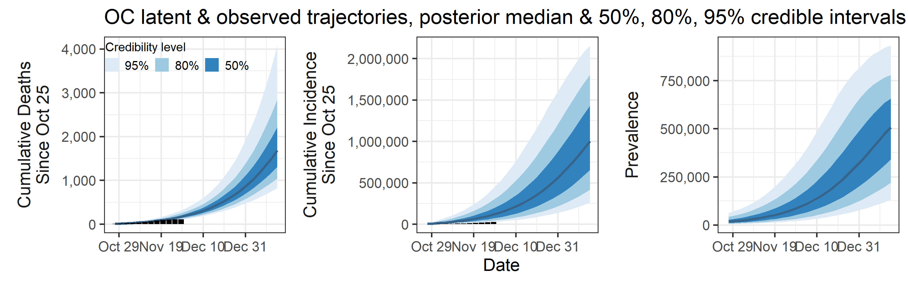
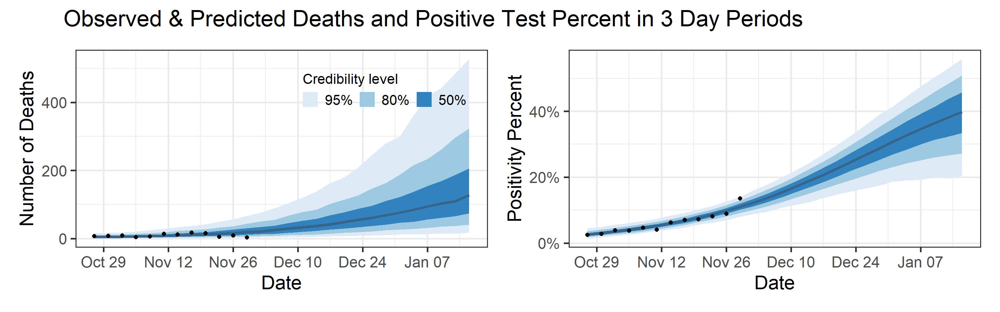
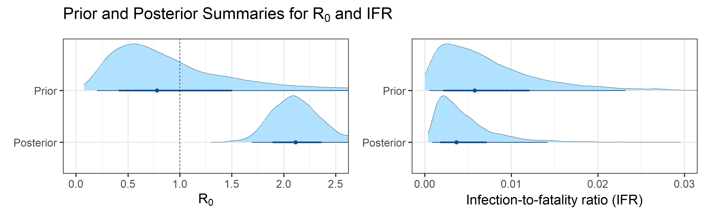
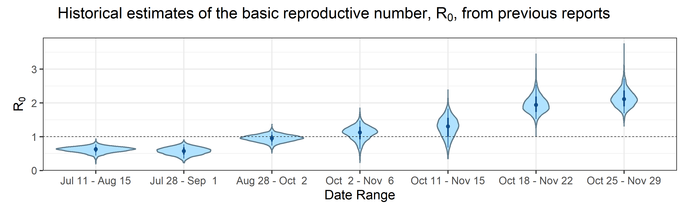
Summary (statements are made assuming 95% credibility levels)
- The number of reported cases (8,500 in this period, shown as black bars in the top-middle plot above) underestimates the actual number of infections by a factor that ranges between 1.4 and 22. This means that we estimate that the total number of infections which occurred between October 02, 2020 and November 06, 2020 is between 12,000 and 190,000.
- Prevalence (number of infectious individuals at any time point) is declining, but is projected to be inside the interval (3,300, 180,000) on December 24.
- Deaths are also underreported, but not significantly so (black bars are a little below blue bands in the topleft plot above). Somewhere between 0.08% and 1% of all infections (not cases!) result in death.
- Basic reproductive number (\(R_0\)), defined as the average number of secondary infections one infectious individual produces in a completely susceptible population, is inside the interval (0.64, 1.5).
- Effective reproductive number (\(R_e\)), defined as its basic counterpart above, but allowing for some fraction of the population to be removed (recovered or deceased), as of November 06, 2020 is inside the interval (0.62, 1.4). We want to keep \(R_e < 1\) in order to control virus transmission.
Abbreviated technical details (optional)
Our approach is based on fitting a mechanistic model of SARS-CoV-2 spread to multiple sources of surveillance data. A more fleshed out method description is in the manuscript.
Model inputs
Our method takes three time series as input: daily new tests, case counts, and deaths. However, we find daily resolution to be too noisy due to delay in testing reports, weekend effect, etc. So we aggregated/binned the three types of counts in 3 day intervals. These aggregated time series are shown below.
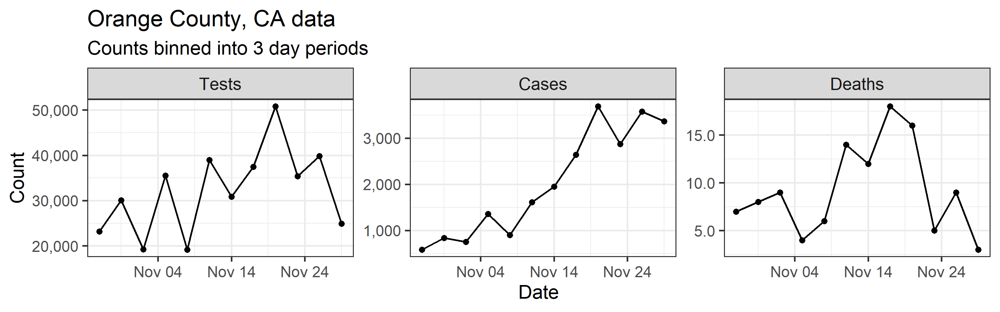
Model structure
We assume that all individuals in Orange County, CA can be split into 6 compartments: S = susceptible individuals, E = infected, but not yet infectious individuals, \(\text{I}_\text{e}\) = individuals at early stages of infection, \(\text{I}_\text{p}\) = individuals at progressed stages of infection (assumed 20% less infectious than individuals at the early infection stage), R = recovered individuals, D = individuals who died due to COVID-19. Possible progressions of an individual through the above compartments are depicted in the diagram below.

Mathematically, we assume that dynamics of the proportions of individuals in each compartment follow a set of ordinary differential equations corresponding to the above diagram. These equations are controlled by the following parameters:
- Basic reproductive number (\(R_0\))
- mean duration of the latent period
- mean duration of the early infection period
- mean duration of the progressed infection period
- probability of transitioning from progressed infection to death, rather than to recovery (i.e., IFR)
We fit this model to data by assuming that case counts are noisy realizations of the actual number of individuals progressing from \(\text{I}_\text{e}\) compartment to \(\text{I}_\text{p}\) compartment. Similarly we assume that observed deaths are noisy realizations of the actual number of individuals progressing from \(\text{I}_\text{p}\) compartment to \(\text{D}\) compartment. A priori, we assume that death counts are significantly less noisy than case counts. We use a Bayesian estimation framework, which means that all estimated quantities receive credible intervals (e.g., 80% or 95% credible intervals). Width of these credible intervals encode the amount of uncertainty that we have in the estimated quantities.
Appendix
Sensitivity to Prior for \(R_0\)
We examine how sensitive our conclusions about \(R_0\) are to our prior assumptions by repeating estimation of all model parameters under different priors for this parameter. The priors are listed in the titles of the figures. Although the prior distribution of \(R_0\) does have some effect on its posterior (as it should), our results and conclusions are not too sensitive to a particular specification of this prior.
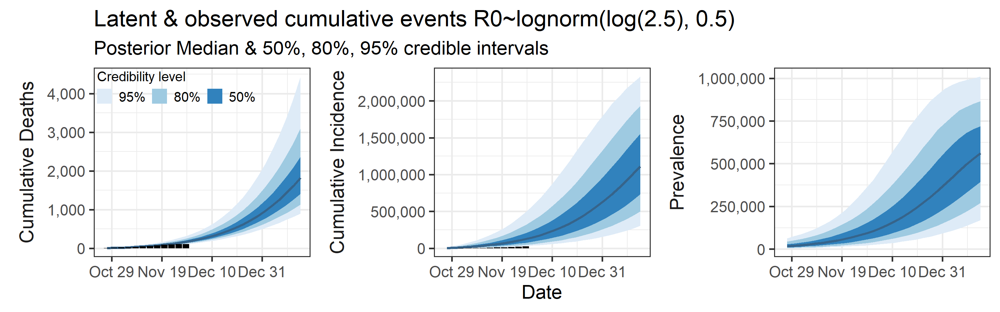
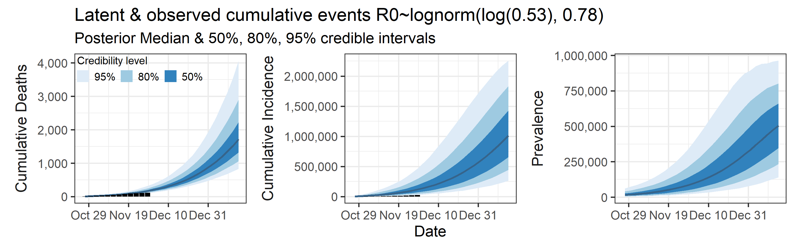
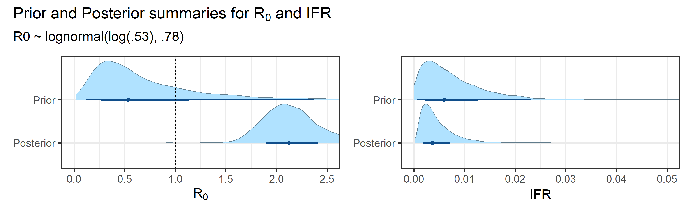
Sensitivity to prior for fraction initially infected
We examine how sensitive our conclusions about \(R_0\) are to our prior assumptions by repeating estimation of all model parameters under different priors for the parameter controlling how many people are infected initially. This prior changes depending on the time period, so we adjust by changing the prior mean to be twice as large or one half as large as the default prior.

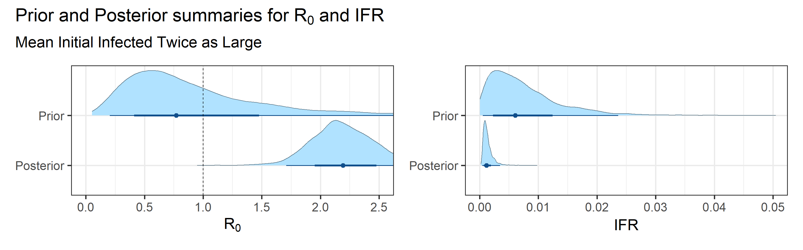
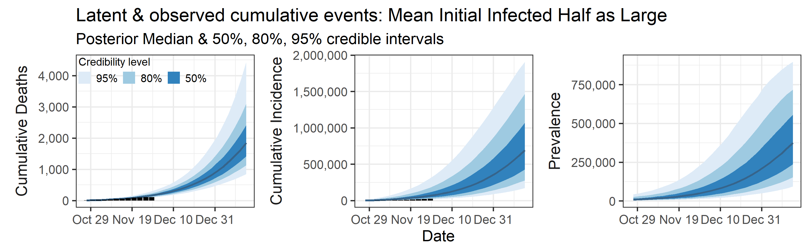
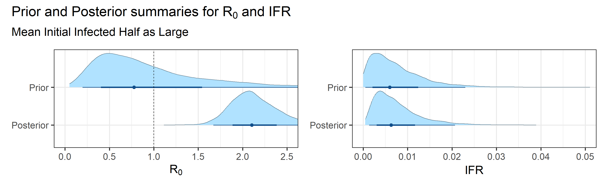
Last updated on 2020-11-18.
R version 4.0.2 (2020-06-22)
Platform: x86_64-w64-mingw32/x64 (64-bit)
Running under: Windows 10 x64 (build 18363)
Matrix products: default
locale:
[1] LC_COLLATE=English_United States.1252
[2] LC_CTYPE=English_United States.1252
[3] LC_MONETARY=English_United States.1252
[4] LC_NUMERIC=C
[5] LC_TIME=English_United States.1252
attached base packages:
[1] stats graphics grDevices utils datasets methods base
other attached packages:
[1] zoo_1.8-8 glue_1.4.2 patchwork_1.0.1 scales_1.1.1
[5] tidybayes_2.1.1 forcats_0.5.0 stringr_1.4.0 dplyr_1.0.0
[9] purrr_0.3.4 readr_1.3.1 tidyr_1.1.0 tibble_3.0.3
[13] ggplot2_3.3.2 tidyverse_1.3.0 fs_1.4.2 here_0.1
[17] lubridate_1.7.9 workflowr_1.6.2
loaded via a namespace (and not attached):
[1] matrixStats_0.56.0 httr_1.4.1 rprojroot_1.3-2
[4] rstan_2.21.2 tools_4.0.2 backports_1.1.8
[7] utf8_1.1.4 R6_2.4.1 DBI_1.1.0
[10] colorspace_1.4-1 ggdist_2.2.0 withr_2.2.0
[13] gridExtra_2.3 tidyselect_1.1.0 prettyunits_1.1.1
[16] processx_3.4.3 curl_4.3 compiler_4.0.2
[19] git2r_0.27.1 cli_2.0.2 rvest_0.3.6
[22] arrayhelpers_1.1-0 xml2_1.3.2 callr_3.4.3
[25] StanHeaders_2.21.0-5 digest_0.6.25 rmarkdown_2.5
[28] pkgconfig_2.0.3 htmltools_0.5.0 dbplyr_1.4.4
[31] rlang_0.4.7 readxl_1.3.1 rstudioapi_0.11
[34] farver_2.0.3 generics_0.0.2 svUnit_1.0.3
[37] jsonlite_1.7.0 distributional_0.1.0 inline_0.3.15
[40] magrittr_1.5 loo_2.3.1 Rcpp_1.0.5
[43] munsell_0.5.0 fansi_0.4.1 lifecycle_0.2.0
[46] stringi_1.4.6 whisker_0.4 yaml_2.2.1
[49] pkgbuild_1.1.0 plyr_1.8.6 grid_4.0.2
[52] blob_1.2.1 parallel_4.0.2 promises_1.1.1
[55] crayon_1.3.4 lattice_0.20-41 haven_2.3.1
[58] hms_0.5.3 knitr_1.30 ps_1.3.3
[61] pillar_1.4.6 codetools_0.2-16 stats4_4.0.2
[64] reprex_0.3.0 evaluate_0.14 V8_3.2.0
[67] RcppParallel_5.0.2 modelr_0.1.8 vctrs_0.3.2
[70] httpuv_1.5.4 cellranger_1.1.0 gtable_0.3.0
[73] assertthat_0.2.1 xfun_0.15 broom_0.7.0
[76] coda_0.19-3 later_1.1.0.1 ellipsis_0.3.1